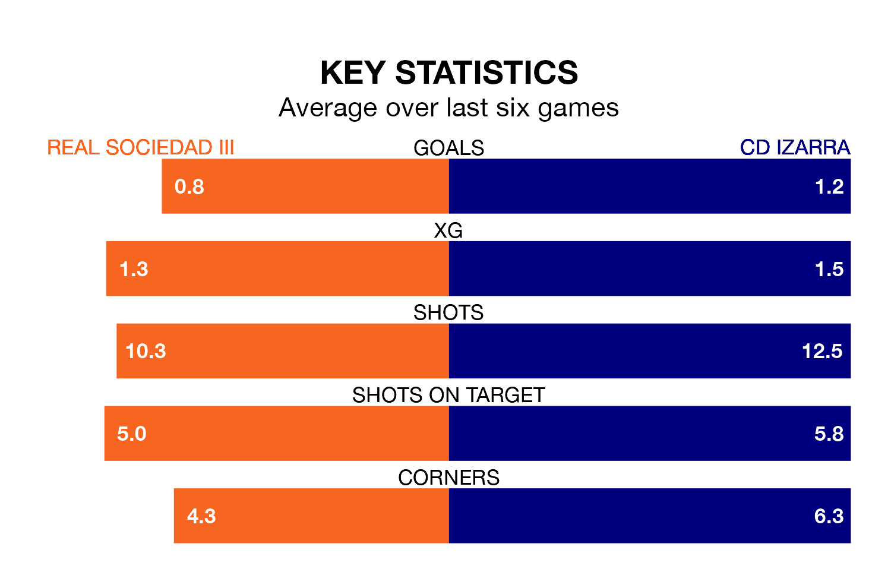

CD Izarra travel to Real Sociedad III on early Sunday in the Segunda División RFEF Group 2.
The visitors come into the game on the back of a win in their last match, having beaten Náxara CD 3-0 at home, with goals from Gorka Laborda García and Eneko Martínez Oraa.
Sociedad III, meanwhile, lost their last match, 3-1 against UD Barbastro, with their goal scored by Aimar Olarra Ayerdi.
With 31 goals in 33 games so far this season, Izarra are scoring at below the league average rate with 0.9 goals per game. And they are conceding more than average, letting in 49 goals at a rate of 1.5 per game.
Sociedad III are also below average scorers, with 1.0 goal per game, compared to a league average of 1.1. They have conceded 1.1 goals per game.
The away team are 13th in the table after 33 games, of which they have won 10 and drawn six, earning 36 points.
The hosts are four places ahead of Izarra in ninth, with 11 wins and 11 draws putting them on 44 points.
Sociedad III are in disappointing form in the Segunda División RFEF Group 2, with one win and three draws from their last six games.
With three wins and three losses over that period, Izarra's form is better – they have taken nine points from 18, compared to Sociedad III's six.
In the last five years, Sociedad III and Izarra have played each other on five occasions. Izarra won three of them and they drew twice.
On average, Sociedad III scored 0.8 goals and Izarra 1.6 in those matches.
Their last meeting was on January 7, when they played out a 0-0 draw.
Updated: 12:00 (UTC), 02/05/24